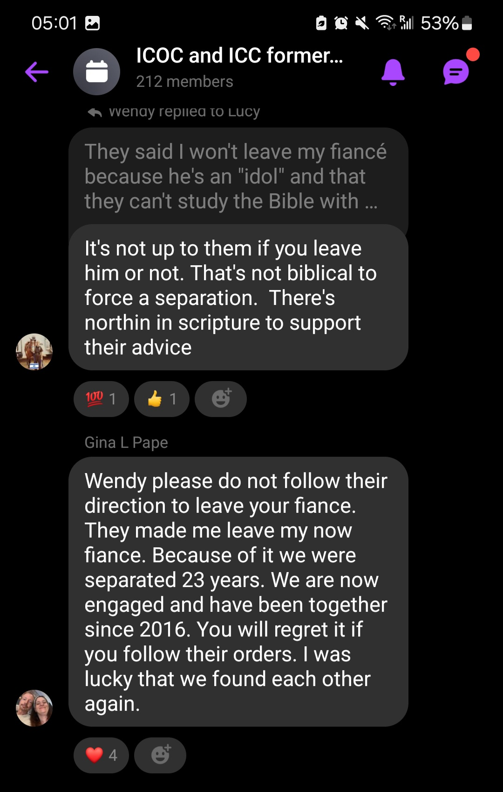

In this section, you'll find stories and testimonies from various individuals who have had encounters with the ICC or similar organizations.
These experiences have been shared across platforms such as Reddit, Twitter, online articles, YouTube, and others.
For a more in-depth look, you can click the links provided or view the relevant videos and images. Also, I beg that you watch the first video in
the list of "additional videos" in the YouTube section. I encourage you watch them all, but if that be the only video you watch from this site, let it
be that one.
Testimonies from Reddit
Here you will find the main quote in bold, which is the first text on the Reddit post. The following
quotes are from comments, which I suggest you strongly read too.
"I wanted to take some time to warn any Christian students on campus about the dangers of this cult. If you aren’t Christian or religious this still may help you either way.
I will be talking about my experiences with this cult to give everyone an idea of what they are like and what they do."
"I was part of the ICC. Indeed, they are a cult. Do not be afraid of them and be straightforward with them. I was in leadership and the disgusting things I saw and went through I wouldn't wish that on anyone. They're on almost all college campuses because they know young, vulnerable people are there. They say young people are easy to mold, meaning easy to manipulate."
"And yes, the International Churches of Christ/International Christian Churches are very sneaky. There are many who thought they were just checking out a Bible study or joining some non-denominational church only to find out they joined one of those two churches."
"Felt something was wrong, prayed about it, and it was revealed in the third study what they really believe. Stood up for my faith in Christ and His sound doctrine. There was a lot of cherry picking verses to fit their cult's religion and were so hyper focused on the physical baptism which is only just a proclamation of one's faith in Jesus Christ, not the provision for salvation (dismissing the power of Jesus's blood). It was disheartening because I now see why cults like this hurt people and can twist God's word. What they were teaching was not a loving relationship with God, but more of this unhealthy fear like if you do not do xyz (works or in this case, the work of baptism) then God is going to punish you which again is completely false (1 John 4:18)."
Here you will find the main quote in bold, which is the first text on the Reddit post. The following
quotes are from comments, which I suggest you strongly read too.
"To clarify, I’m not in leadership and I don’t plan on ever “stepping up” to be. I’m just a regular member who was baptized a few years ago. I plan on leaving the church as soon as God opens another door for reasons I can explain if asked."
"What made me leave was the fact that “stepping up” is an inevitability that is expected of every member. For all intents and purposes, it’s a startup church that needs its every member to “step up” in some capacity. Whether it’s serving as an usher, singer, mercy ambassador, kids kingdom, discipler, Bible talk leader, then going a little higher deacon of something, evangelist/WML etc. it’s a need that needs to be filled and somehow someway you will be “encouraged” to step into these roles and refusal to do so means “you have weak faith” or that “you need to trust God more”.
"“I know your deeds; you are neither cold nor hot. How I wish you were one or the other! So because you are lukewarm—neither hot nor cold—I am about to vomit you out of My mouth!” ‭‭Revelation‬ ‭3‬:‭15‬-‭16‬ ‭BSB‬‬ -you have to be fully committed or not at all for your faith’s sake. Your faith in God that is, not in the church. But obviously, in this church, faith in God and faith in the church is synonymous. Which in that line of thinking, if you doubt the church you’re already doubting God. I don’t agree. You made Jesus Lord not Kip not your leader not the person who baptized you. This is the faith that needs to be solid - faith in God."
"I was nearly "recruited" by this chapter. Based on research I'm aware of the ICC's reputation. But does anyone have any experience with this chapter in particular or other ICC organizations in Canada?"
Here you will find the first quote to be the of the main poster. The quotes that follow are of the comments of people discussing their personal experiences, and seeking help.
I encourage you to go through the comments thoroughly to fully take it all in.
"As a concerned individual, I want to raise awareness about the International Christian Church (ICC). This religious organization has been known to use manipulative tactics and control over its members, particularly those who are vulnerable or seeking spiritual guidance."
"My husband and I are going through the same thing. They have their claws in my daughter and it has been devastating. She now points out in the bible where it says - it's ok to leave your family (biologiocal) because the church will be her family now."
"in the beginning it was all cherries and bananas then later on it felt cagey, im a person with a lot of opinions and im a very good listener, anything that doesnt make sense to me will be met with a challenge until im content and it makes perfect sense especially now this was about my salvation —
How the sourness commenced."
"Former member right here. They’ve been changing their name around like they always do. I was abused there stalked after I left and gossiped about I was made to choose my salvation or write an apology letter at the big church gathering where I would’ve had to go on stage and confess my sins and believe me I would’ve had to make stuff up."
"I'm so sorry to read about your daughter! I'm an ex-member of the Sydney church. All things are merry and fun in the beginning. I got into a meeting with the church head Joe Willis couple of times before deciding things were strange. I provide some scriptures which hopefully could help your daughter below."
"He’s right. Cult. I was warned. I didn’t listen. I joined, and then I got sick very sick bedridden and now they are trying to force me to admit I lost my salvation. Now they’ve hurt me & are now scheming on me. Demonic. I like to give everyone a chance but I should’ve listened. Stay away & don’t fall for love bombing."
"They tried to recruit me into their Toronto location church. I am already a christian and have my own church but they attempted to make me feel like a sinner who is going to hell because I am not a "disciple" and ONLY disciples go to heaven."
Here you will find the main quote in bold, which is the first text on the Reddit post. The following
quotes are from comments, which I suggest you strongly read too.
"TL;DR at the end, but I encourage everyone to read. In the future, you could be saving your own or someone’s time, money, health, and faith."
"I was part of this cult from 2010-2012. I once missed a campus bible study on a Tuesday and church on Sunday because I was visiting my mom who I hadn’t seen in months. I was reprimanded when I got back about how I need to get my priorities in order and god needs to come first, and that means not missing church events."
"I need help. I was just recently bought into the church 3 months ago and I started having a suspicion when they offered that members should give more for the church. I was already running thin on cash but still gave the little I had to the church. I was told I was not fully committed enough and then asked that I give more"
"Thanks for sharing this information. Recently I just got in the ICC and was just baptised. However, I had always noticed something was off (such as only dating within their church and only their baptism counts) and your story just confirmed my suspicions. Do you have any advice how to leave the ICC as I have already attended a fair amount of their church events?"
"I am trying to leave the church. I am part of the church in Seattle. I knew that there was something wrong with the church from the way beginning but I should of listened to myself. They pick favorites and obviously I'm not a favorite because I don't share my faith everyday and I don't bring out a person to church every single Sunday."
"I was approached by this group at my university, and everything you said is correct about it, at first I thought it was what I needed at that time, but as I hung out with them more they seemed to really focus on my relationship ( my partner was of a different faith) and kept telling me that I needed to either get my partner saved or break up with him because it’s not gonna work between us"
Here again, the first quote in bold is for the main post, with the
subsequent ones being from the comments.
"It's been 2 years and you'd think they would have left me alone, especially as I haven't reached out to them. But nope. Surprisingly, they have continuously been messaging me, inviting me to come to their events or bible studies. I blocked the girls I knew as they were constantly cyberstalking me, messaging anyone I would tag in my stories and so I became fearful."
"As a former member I can tell you that they are under a lot of pressure to recruit people so will persist until they can’t access you anymore - at some point we were advised to basically try until we were blocked by the person"
Here, you will find quotes partaining to conversations from Twitter threads. I urge you to create a free account, even just for this reason (if needed) and read
not only the main posts, but also the comments, and "quote replies".
"Y’all, read this shit!!! WTF!???"
"I grew up in a church like this. They forced me to marry my abusive partner in exchange for help with housing."
"My client (who I love let me make that clear) came in this week and she is “church of Christ” … she has some different understandings of scripture than myself but the thing that catches me off guard every single time is the OBSESSION with baptism. YES, we should be baptized as commanded, but every time she spoke of salvation as we discussed theology it was “well he was baptized”… “full Emersion” she asked me what I thought salvation was and I told her John 14:6 says Jesus is the only way and Romans 10:9 says if we believe and confess we are saved by grace. I also shared with her a man in our old congregation who could not be immersed due to being on a medical device that helps him breathe so they laid him back and poured it on his head…. and she said “well that’s for God to decide” WHAT? He believes!"
"Ask her if someone believes in Christ on a Saturday and is going to be baptized on Sunday, but on the way to the baptism has a tragic accident and passes away, is that person saved? They’ll say no."
"When I encounter good folks like this I point them to Acts 10. The story of Cornelius and his entire family. Besides being gentiles they have not been baptized only believed in God and did good because of their belief. The key verse is 44 ”While Peter was still speaking these words, the Holy Spirit came on all who heard the message.“
Acts 10:44 NIV
Not apostles, not Jews, not baptized but, God saw fit to pour out the Spirit on them."
"Read this, thought about it, moved on, thought some more and came back to it. Odd, how with experience and information our thought process changes. Point being:
A- people who tell others whether they are saved or not have assumed the role of the One who sits upon the white throne of judgement. That’s a dangerous place to tread."
"My brother who is a total infidel ended up attending church of christ because of a girl.
They baptized him quick as a whip, he still rejects Christ.
They believe in baptismal salvation and works to keep your salvation, major cult. Very sad."
"One of my good friends was raised in the Church of Christ. It is very much works-based salvation doctrine. A member will always strive wondering if they have done enough to gain God’s approval. It’s very sad. My friend now lives in the reformed way-faith by grace in Christ alone."
"I was raised Church of Christ but God graciously saved me out of that cult when I was 16 yo. That is exactly what they believe, and they’re greatly deceived, mishandling Scripture. Pray that God will open their eyes and give you wisdom to witness to them. I’m praying for you!"
"See if you can seek out an ex-members group or check out this site (https://allaboutcoth.com). Make sure he stays in touch with you and with other friends outside the cult, because if he decides to leave, his new “friends” will drop him like a hot potato."
"Why do I give these tips? I got ensnared by the International Church of Christ cult for a year and several months. by a well-meaning friend in late HS/early college - realized what I had gotten into when my campus leader from hell tried to prevent me from transferring to UGA."
"Thank you - there‚Äôs still some mild trauma I deal with, but for the most part I‚Äôve recovered. I‚Äôm one of the lucky ones ‚ù§Ô∏èüôèüèª.
And yes, deprogramming is also very expensive and there’s no guarantee that anyone will respond positively to it."
"@KendallRaeOnYT Have you ever heard of the International Church of Christ (aka the ICOC) ? It is a straight up CULT that I got roped into during my sophomore year of College. They tend to prey on young and naive college students who are just looking to belong somewhere."
"They are extremely manipulative and their ultimate goal is to control who you are. They believe that they are the “only true church” and even made me get baptized a second time because the “first time didn’t count” because it was with a different church."
Here, I urge that as you watch these videos, scroll through the comments
as other people share their experiences there too. In the additional videos list,
I ask that you please watch the first one most especially.
YouTube Video 1
This YouTuber shares their experience of being a part of ICC from 2008-2022 and how they eventually left due to their abusive control tactics.
You can watch it directly on YouTube here:
Click here
YouTube Video 2
This YouTuber shares their experience of "What It's REALLY Like Living in a Cult: Inside the ICOC"
To watch the full video:
Click here
YouTube Video 3
"This YouTuber, former member of the ICC, ponders the question 'Is the International Christian Church a Cult?'."
To watch the full video:
Click here
YouTube Video 4
This YouTuber breaks down the ICC and Kip McKean's tactics to ensnare people.
To watch the full video:
Click here
YouTube Video 5
This YouTuber shares his story: "How I Accidentally Almost Joined A Cult (ICOC Cult Storytime)"
Watch the full video:
Click here
Additional videos you could watch (especially the first one in this list) include:
"Ex-ember of 7 years warns to be beware of the ICOC/ICC"
Watch the full video:
Click here
TikTok Video 4
"Getting set-up for dates in the ICC. Ex-member explains undue control that happens in the ICOC/ICC"
Watch the full video:
Click here
TikTok Video 6
"The ICC and personal relationships." (Part 1 and 2)
Watch the full video:
Click hereClick here
TikTok Video 7
"The ICOC/ICC and loved ones; Friends and Family."
Watch the full video:
Click here
Web Article Testimonies
Here, you will find links to web articles detailing the experiences former members went through. I urge you to take the time to read them fully.
Article 1
Why I Left the ICC (And Won’t Ever Return)
"In October of 2022, my husband and I made the very difficult, but necessary decision to leave the International Christian Church. We had been members for over 13 years."
This Church Promised to Save Their Souls. Defectors Say It Was a ‘Cult’
"This Church Promised to Save Their Souls. Defectors Say It Was a ‘Cult’"
Read the full article by Andrea Marks for Rolling Stone here.
Article 3
Claims of cruelty, brainwashing and excessive control dog church at FIU
"It was March 2013, and Kellogg had just become a member of the International Christian Church (ICC), L.A. Chapter. A self-described Protestant, he had always yearned for a student organization where he could practice his beliefs while studying at California State University, Fullerton. However, he couldn’t have known that his almost-two-year experience with the ICC would forever change his understanding of the faith."
"It was a high-pressure environment,” Kellogg said. “Not only was my salvation put into doubt, but how I dressed, how I behaved, and my relationships with friends and family. I felt like I was in a pyramid scheme about to collapse."
Williams: I spent six months in a cult. They’re still here on campus.
"When I underwent the Christian rite of baptism in 2017, I did not consider I would need another. But on Feb. 26, 2020, I was baptized again. It was basically the same ceremony: being submerged underwater in a pool in the name of Father, Son and Holy Spirit. But this time, I joined a cult that hijacked my spiritual, social and academic life for six months."
"No one ever willingly joins a cult. People are drawn, deceived and trapped into them, often by other people who are victims of the same exploitative system."
"I was love-bombed for six straight weeks by this fervent community of believers with the promise of genuine community and eternal salvation. When my own campus ministry pastor tried to get me to see why the ICC’s beliefs were heretical and dangerous a couple of weeks after my baptism, I rejected it. In fact, I argued with him for over an hour, regurgitating their points about salvation."
For this part, I was able to converse with 2 people who had dealings with the ICC.
Taylor grew up in it, and Dave helped someone leave. These insightful conversations are here for you to read.
In the other folders, you'll find screenshots from Facebook groups made up of ex-members.
"Taylor describes her experience with the ICC.""Taylor shares some more.""Extra details.""End of conversation.""Dave explains his encounter with the ICC.""Dave shares details.""Dave describes his action steps.""End of conversation with Dave."
"On ICC dating.""Comments 1 on ICC dating.""Comments 2 on ICC dating.""On using 'bro' for outsiders.""Comments on bro calls."
"Mom is concerned about son's new behavior at home after joining.""Mom reveals she lost her daughter.""Comments on lost daughter.""Comments on bro calls.""Comments on bro calls.""Comments on bro calls.""Comments on bro calls."
"On ICC mandate on exterior relationships.""On ICC and her studies/time/relationship.""Comments on ICC relationship mandate."

"Comments on studies/time/relationships""Reflecting on negative impact of ICC relationship mandate.""Feelings about relationship status within ICC.""On ICC marriages"
"On various ICC topics.""On missing devos and events.""On discipling and leadership structure.""Extra comments.""Things he got in trouble for in the ICC."